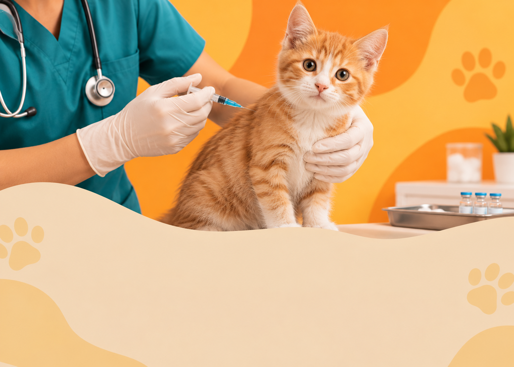
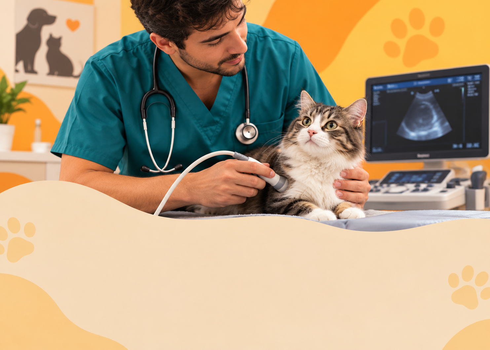

01
Check-up
Acompanhamento para entender como seu pet está e perceber alterações antes que elas avancem.
Check-ups e cuidados veterinários para acompanhar a saúde do seu pet de perto, com atenção em cada detalhe.
Na VITTA PET, acreditamos que cuidar da saúde do seu pet vai além de tratar quando algo acontece. É observar, acompanhar e entender o que ele precisa em cada momento.
Por isso, nosso atendimento busca unir prevenção, atenção aos detalhes e proximidade com quem conhece melhor o seu pet: você.
Conheça a VITTA PETDo acompanhamento preventivo aos cuidados do dia a dia, oferecemos serviços pensados para diferentes fases e necessidades.
Acompanhamento para entender como seu pet está e perceber alterações antes que elas avancem.

Proteção em dia para uma vida mais segura.

Avaliações que ajudam a entender melhor a saúde do seu pet.
Higiene, conforto e cuidado em cada detalhe.
Orientações para manter a saúde do seu pet também fora da clínica.
Fale com a VITTA PET →Cada pet possui necessidades diferentes. Por isso, cada atendimento é pensado de forma individual.
Acompanhar a saúde de perto ajuda a perceber mudanças antes que elas se tornem problemas.
Você entende o que está acontecendo e como continuar os cuidados em casa.
O cuidado continua mesmo depois que a consulta termina.
Sim. O agendamento ajuda nossa equipe a organizar os horários e oferecer um atendimento mais tranquilo para você e seu pet.
Trabalhamos com as principais vacinas para cães e gatos. Durante a consulta, avaliamos a necessidade de cada pet e orientamos sobre o protocolo adequado.
Sim. Nossa equipe está preparada para atender cães e gatos com cuidados de acordo com as necessidades de cada animal.
O serviço é realizado com atenção ao conforto e às características de cada pet, incluindo cuidados específicos conforme o tipo de pelagem.
Sim. Quando necessário, podemos solicitar e encaminhar exames para auxiliar na avaliação e acompanhamento da saúde do seu pet.
Cuide da saúde do seu pet com atenção, carinho e acompanhamento de verdade.
Fale com a gente →